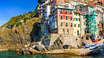
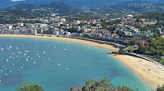
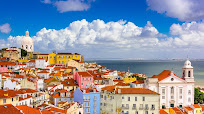
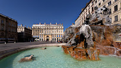

Pontos Turísticos:
Itália
A Itália, país europeu com uma longa costa mediterrânea, deixou uma marca poderosa na culinária e na cultura ocidentais. A capital, Roma, é sede do Vaticano e abriga obras de arte monumentais e ruínas antigas. Outra cidade importante é Florença, com obras-primas do Renascimento, como o "Davi", de Michelangelo, e o Domo de Brunelleschi. Destacam-se também Veneza, a cidade dos canais, e Milão, capital da moda italiana.
Espanha
A Espanha, país europeu da península Ibérica, tem 17 regiões autônomas com geografia e cultura diversas. Madri, a capital, abriga o Palácio Real e o Museu do Prado, obras erigidas por mestres europeus. Segóvia tem um castelo medieval (Alcázar) e um aqueduto romano intacto. A capital da Catalunha, Barcelona, apresenta monumentos modernistas de Antoni Gaudí, como a Igreja da Sagrada
Portugal
Portugal é um país no sul da Europa, localizado na Península Ibérica, que faz fronteira com a Espanha. Sua localização às margens do Oceano Atlântico influenciou muitos aspectos da cultura do país: o bacalhau salgado e as sardinhas assadas são pratos típicos nacionais, as praias do Algarve são destinos muito procurados e boa parte da arquitetura do país data dos séculos XVI a XIX, quando Portugal era um poderoso império marítimo.
França
A França, na Europa Ocidental, tem cidades medievais, aldeias alpinas e praias mediterrâneas. Paris, sua capital, é famosa pelas casas de alta costura, museus de arte clássica, como o Louvre, e monumentos como a Torre Eiffel. O país também é conhecido pelos vinhos e pela cozinha sofisticada. Antigos desenhos da caverna de Lascaux, o Teatro Romano de Lyon e o amplo Palácio de Versalhes atestam a sua rica história.
Paises Baixos

Os Países Baixos, conhecidos informalmente como Holanda, é uma nação constituinte do Reino dos Países Baixos localizada na Europa ocidental. O país é uma monarquia constitucional parlamentar democrática banhada pelo mar do Norte a norte e a oeste, que faz fronteira com a Bélgica a sul e com a Alemanha a leste